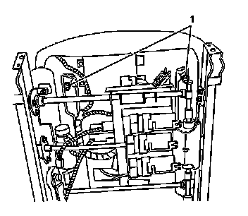

Front Seat Cushion Replacement
Front Seat Cushion Replacement
Removal Procedure
Caution: Refer to SIR Caution (SIR Caution) .
1. Disable the SIR System. Refer to SIR Disabling and Enabling (Service and Repair) .

2. Move the seat to the full forward position.
3. Remove the retaining nuts (1) securing the seat cushion to the seat adjuster assembly.
4. Lift the front of the seat cushion upwards.
5. Remove the power seat switches. Refer to Power Seat Switch Replacement (Power Seat Switch Replacement) .
Notice: Note the correct routing of the electrical wiring. Failure to reinstall the wiring properly could result in damage to the wiring.
6. Disconnect the wiring harness fastener and retainers securing the wiring harness to the bottom of the seat cushion frame.
7. Pull the cushion forward in order to remove the seat cushion from the seat adjuster assembly.
Installation Procedure
1. Insert the seat cushion locators, at the rear of the seat cushion frame, into the rectangular openings in the seat adjuster assembly.
2. Secure the wiring harness to the seat cushion frame in the same position in which it was removed.
3. Install the power seat switches. Refer to Power Seat Switch Replacement (Power Seat Switch Replacement) .
4. Lower the front of the seat cushion down into position onto the seat adjuster assembly.
Notice: Refer to Fastener Notice (Fastener Notice) .
5. Install the seat cushion nuts (1).
Tighten the nuts (1) to 10 N.m (88 lb in).
6. Enable the SIR.